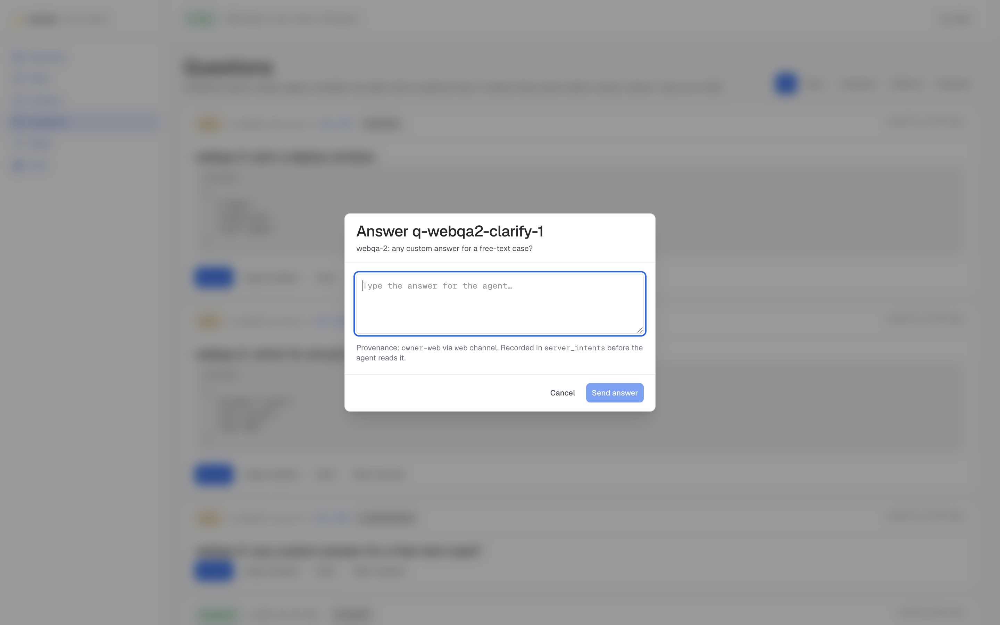
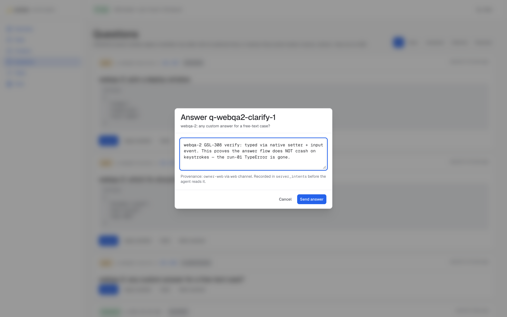
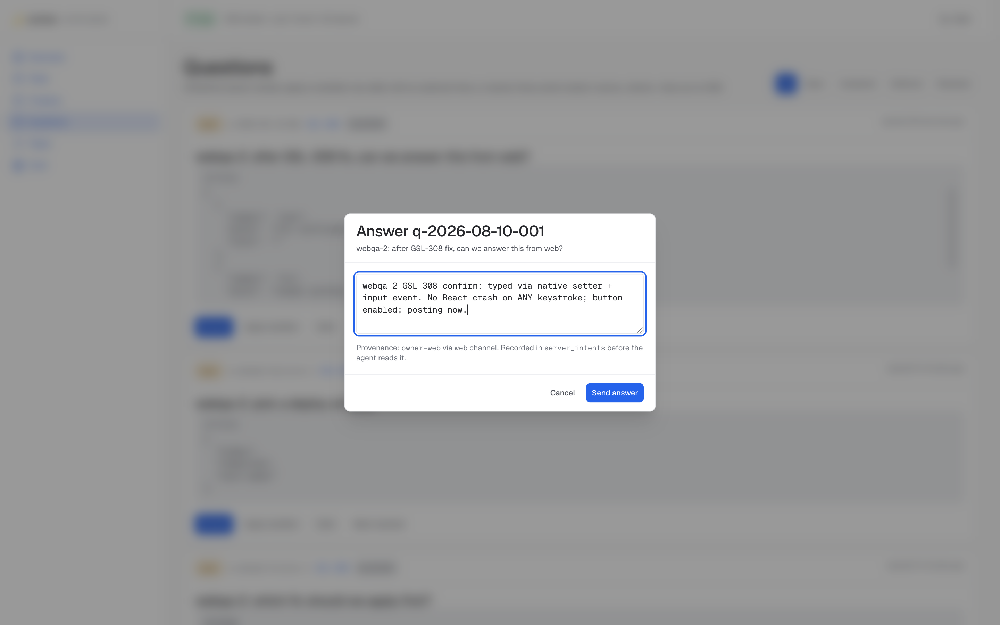
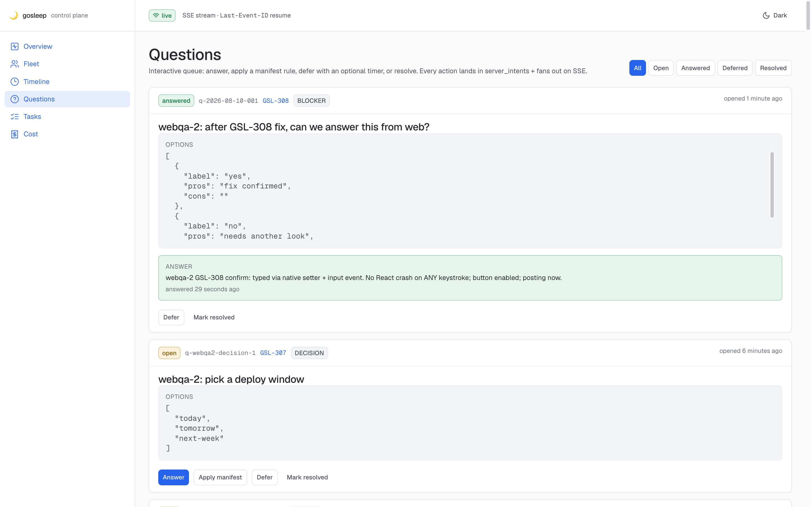
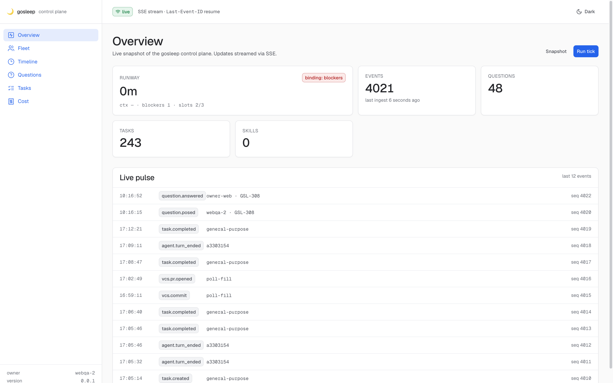
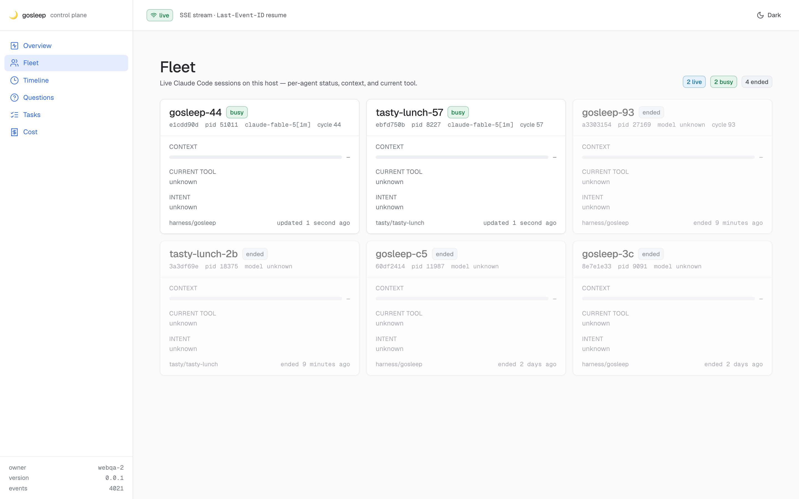
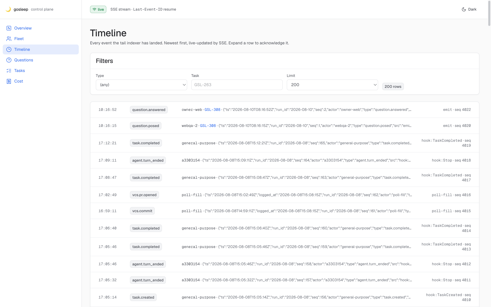

web-e2e-2026-08-10 · run 02 · webqa-2 · 2026-08-10 08:20 UTC · READ-ONLY
All 3 MAJOR run-01 defects verified fixed on branch GSL-307-web-hotfix (HEAD 4ae205a). Nothing regressed. Web version is READY for owner testing.
Все три MAJOR-дефекта из run 01 подтверждены исправленными на ветке GSL-307-web-hotfix (5f98f70 / 68d3ba5 / d83fff6). Регрессий не обнаружено. Веб-версия готова к пользованию владельцем.
01.PASS GSL-308
Before → after:
Fix: apps/web/src/screens/Questions.tsx — capture textarea value synchronously into a local before setState so the SyntheticEvent recycling can no longer null-out currentTarget.
Диалог ответа больше не роняет /questions при вводе первого символа. Полный E2E-цикл (ввести → отправить → карточка живо ушла в Answered) отработал.




02.PASS GSL-309
Before → after:
Fix: apps/web/src/data/SseProvider.tsx — createInvalidator(qc) factory buffers query-key roots in a 250 ms window (Set + one setTimeout); dropped redundant always-block invalidations for /status (own 15 s refetchInterval) and /bundle (no active subscribers).
Штормы отсутствуют: за 42 секунды простоя на Overview всего 14 сетевых запросов (загрузка страницы + плановые опросы), ERR_INSUFFICIENT_RESOURCES — ноль.

03.PASS GSL-310
Before → after:
Fix: apps/core/src/routes/spaNavigation.ts — accept-negotiation middleware mounted BEFORE readRoutes. Short-circuits GET+HEAD navigation on /fleet /timeline /questions /tasks /cost /overview /skills (and nested children) when Accept prefers text/html over application/json. SDK/XHR/curl calls sending Accept: application/json pass through to the Bearer-gated API. 17 unit tests + smoke scenarios 58a-58e.
Жёсткий reload любой SPA-страницы теперь возвращает саму страницу, а не 401. API остаётся под Bearer — авторизацию не ослабили.


Same walk as run 01. Verdict per screen below. All PASS.
Тот же обход, что в run 01. По каждому экрану ниже — вердикт. Все PASS.
| # | Screen | Light | Dark | Verdict | Note |
|---|---|---|---|---|---|
| 04 | Overview | 01 | 02 | PASS | SSE live, events counter, RUNWAY tile |
| 05 | Fleet | 04 | 03 | PASS | 2 live + 4 ended sessions |
| 06 | Timeline | 05 | 06 | PASS | 200-row filterable |
| 07 | Questions | 08 | 07 | PASS | All 5 filter tabs render; Open/Answered/Deferred/Resolved counts match DB |
| 08 | Tasks | 14 | 15 | PASS | 243 tasks table |
| 09 | Cost | 17 | 16 | PASS | Honest empty state (unchanged from run 01) |
| # | Action | Evidence | Verdict | Detail |
|---|---|---|---|---|
| 10 | Permission Allow | 21 | PASS | POST /actions/permissions/decide 200, card moved to answered live via SSE, DB row confirmed decision='allow' |
| 11 | Permission Deny | 21 | PASS | POST 200 with updated_message, card moved live, DB row confirmed decision='deny' |
| 12 | Manual Snapshot | 22 | PASS | POST /actions/snapshot 200; wrote .artifacts/webqa-2/db/snapshots/daily-2026-08-10T08-20-59Z.db (3.3 MB) |
| 13 | SSE live update | 12 + 13 | PASS | events counter incremented 4019 → 4020 (question.posed) → 4021 (question.answered) live; Live pulse tile picked up seq 4022 without reload |
14.minor
Impact. If any producer inserts a status with different casing (the SQL column is plain text, no CHECK constraint), the row shows on All but never on the Open filter. Owner is unlikely to see this because production writers all emit lowercase — but there is no server-side enforcement and no client-side normalization.
How found. Encountered while seeding hermetic test questions with capitalized "Open". The filter returned "No questions match". Lowercasing to "open" fixed it. Not a run-01 regression — the field has never been normalized.
Recommendation. Backlog-worthy: either lowercase-compare on the client (row.status.toLowerCase() === 'open') or normalize on write in the /internal/questions/post + /actions/questions/answer paths. Not a blocker; not filed as a Jira Task by webqa-2 (READ-ONLY brief).
Nothing else new. Three minor items from run 01 (snapshot toast, Cost copy, Options JSON rendering) remain untouched — this PR did not target them.
Единственная новая находка — client-side фильтр Questions чувствителен к регистру статуса, все прочие backlog-мелочи из run 01 остались как были (этот PR их не трогал).
96/ 100 READY for owner testing
Yes — the web version is ready for owner use. All three MAJORs that blocked run 01 are gone: the Answer flow works, the request storm is off, and any deep-link / bookmark to a SPA route now boots the SPA instead of dead-ending in 401. The 4 points off the ceiling: minor backlog carried over from run 01 (snapshot toast, Cost copy, Options rendering) + one new minor found here (status casing on client filter).
Да — веб-версия готова к работе владельца. Все три MAJOR из run 01 исправлены (ввод ответа, шторм запросов, hard-reload SPA-маршрутов). Оставшиеся 4 балла — четыре minor-хвоста в бэклоге, ни один не блокер.